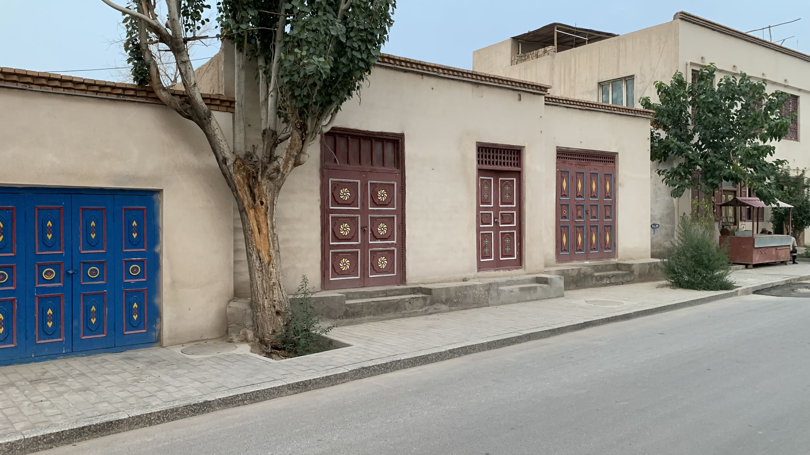
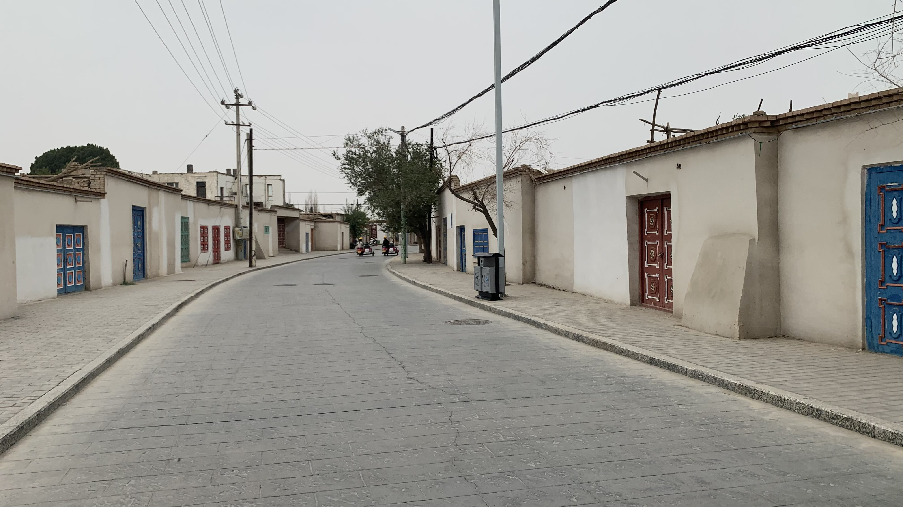
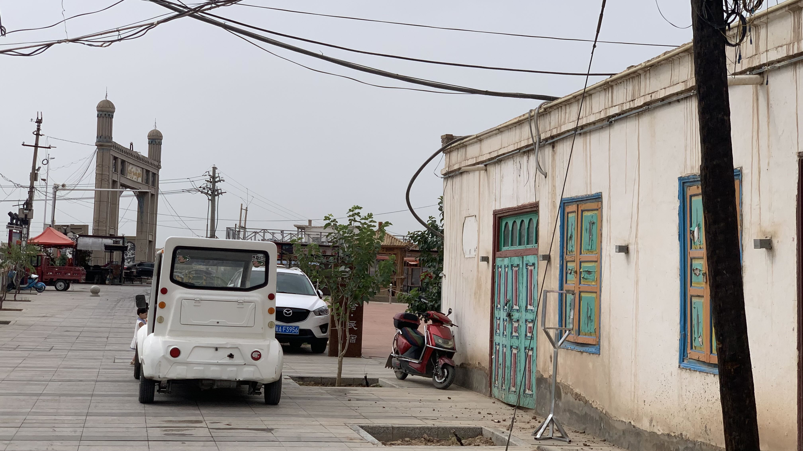
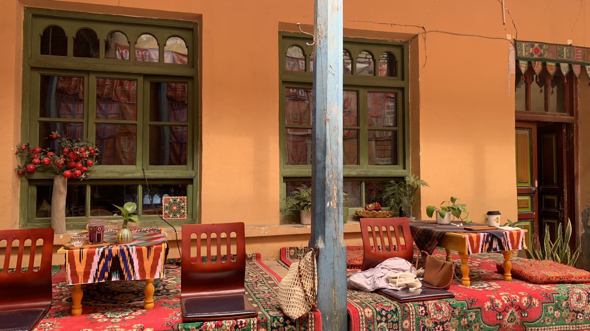
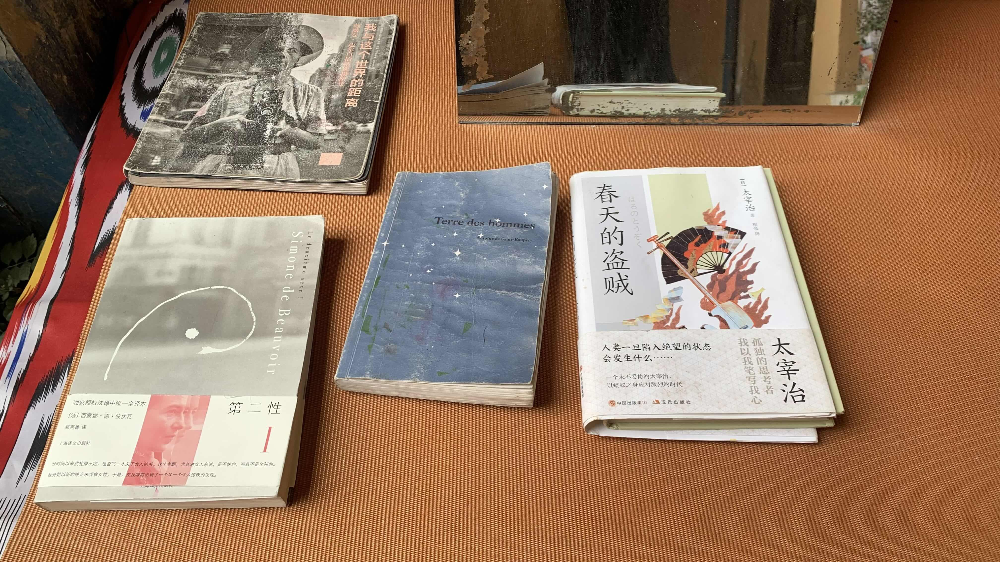
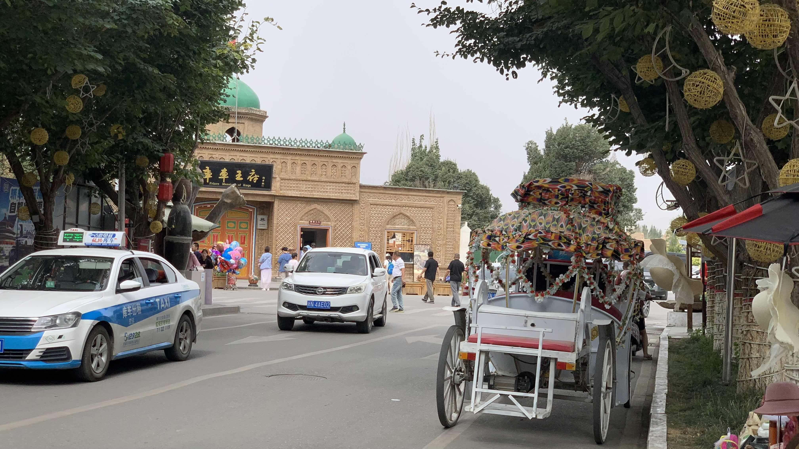
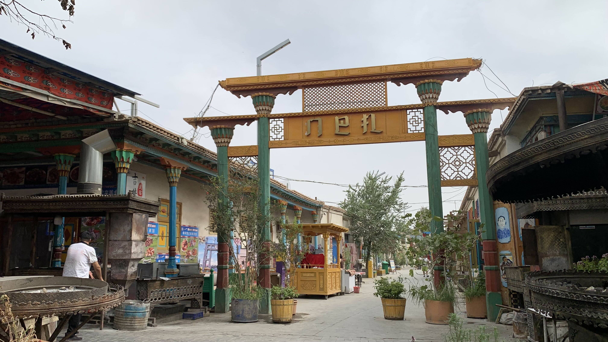
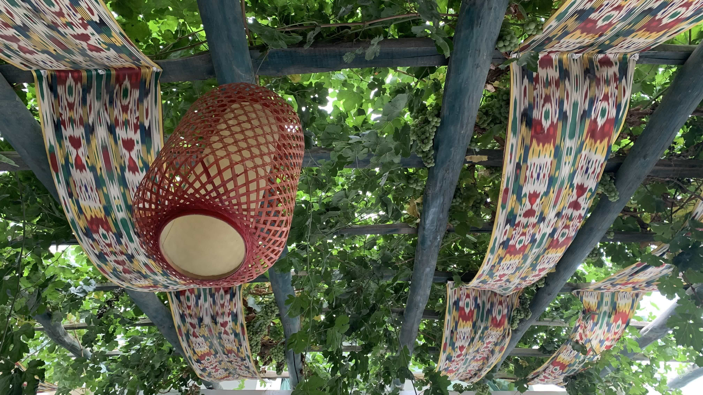
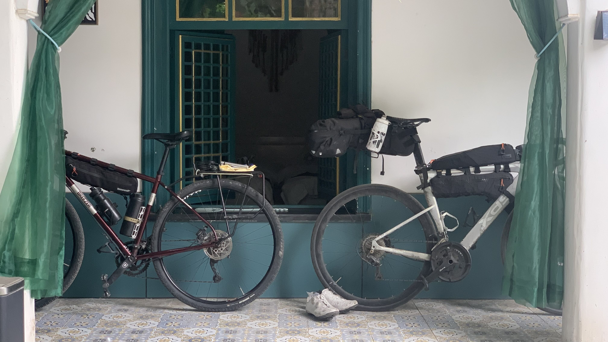
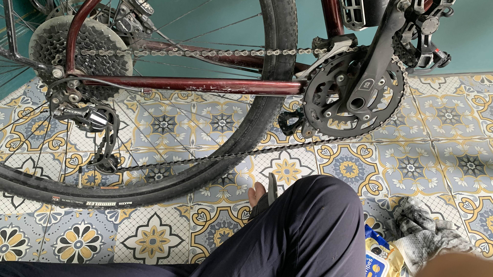

k-Day 155-156｜適合孕育文明
昨天下山實在太累，醒來後逐漸回憶起昨天流過的一些細小感受。
前一晚在阿格鄉的山谷夾縫中看到的紅色屏障，原來只是大門口的一座屏風。昨天早上繞過這座山，才意識到自己已來到另一個世界。
峭壁、森林和草原都消失了，礦區拉煤車揚起的沙塵和紅色綿延的山脈橫擋在眼前。這豈不是西遊記的場景嗎？

進入庫車老城區，直覺感受到這個地方不同於過去幾個月經過的城市，沈澱在每個物件中的文明都低聲說著一種不尋常的故事。

巷弄裡的植栽，牆上的木門、門上的紋飾和顏色，甚至是擠滿觀光客的商業街都掩蓋不住的人類遺留在此地的痕跡。
此處的空氣中有時間在緩緩流動的氣息。

雖說此行的目的是希望可以採集空間中表象的人類精神，但是從幾十公里外的自然地貌一路堆疊，直到進入切割後的人造地景，過程中卻毫無斷裂感、理所當然地傳遞著自身文明厚度的城市，五個月來這可是第一次遇見。
這裡有自己的文明。就在天山腳下。
我決定在此多待幾天。

在住處附近找了間咖啡廳，穿過拱形長廊走進院內，露天的門廊下架高了鋪上地毯的座位區。

背對牆面擺放的木桌椅前是一面由各式紅紫色旗幟打底的水泥灰牆。

角落擺放了幾本書，大概是老闆喜歡的類型。
咖啡還好，是視覺強烈的店家。

天氣太熱，不適合在戶外久坐，於是循著原路往回走。

巷子外就是鬧區和知名景點。
買了一杯藍莓酸奶帶回住處喝。

回到民宿後坐在葡萄藤下發呆。現在想想，「我決定在此多待幾天」這樣的說法並不準確。
不是我個人主觀意識的決定，而是進入此地後，環境與我產生了一種氛圍，這地方必須是停下來的狀態。熱鬧的街市和安靜無人的巷弄，不遠處隨著風聲傳來的另一種語言節奏的音樂，全都透過院內棚架垂下的葡萄藤和偶爾穿透茂密藤葉落下的雨滴告訴我：停下來。這裡還有更多，必須用時間才能感受人類保留在場所中的時間。
從阿爾泰山繃緊神經一路隨著河谷往下游沖刷的混亂狀態，直到今日似乎舒展開來。

二十三號在這裡有新朋友，這輛公路車從第一晚就在這裡，但是路上似乎沒見到過他的主人。

拖出來擦，此處適合孕育文明。人的語言有節奏感，城市中的顏色也有律動。安靜處聽得見橄欖樹的葉片被風吹動的摩擦聲，即便夜空中傳來樂音也不掩蓋自然，是一種沒有空間掠奪感的聲響。
《紅樓夢》裡面，曹雪芹透過林黛玉的眼睛給王熙鳳第一次出場的描寫，也許最接近此處給我的第一印象
今日花費： 咖啡29、23、晚餐 53.4、零食 35.12、住宿 53、午餐 68、可樂 3.5、蜜雪冰城 30.37元